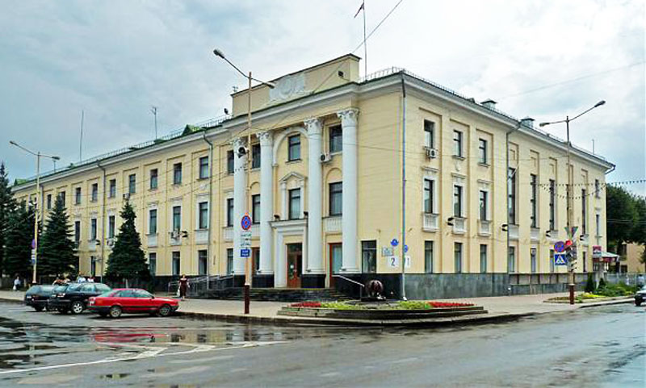
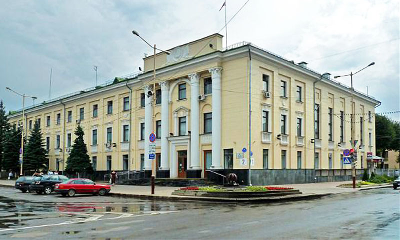

Барановичский городской исполнительный комитет
История и современность административного центра города

История и современность административного центра города
Барановичи — город с ярким прошлым, основанный в конце XIX века как железнодорожная станция на пересечении важнейших путей Московско-Брестской и Вильно-Лунинецкой железных дорог. Благодаря своему стратегическому положению он быстро превратился в крупный транспортный и промышленный узел.
Городской исполнительный комитет (горисполком) на протяжении десятилетий является центральным органом местной исполнительной власти, координирующим развитие инфраструктуры, социальной сферы, жилищного строительства и городского хозяйства. С его участием в Барановичах были построены школы, больницы, культурные учреждения и жилые районы, определившие облик современного города.
Адрес: 225409, Республика Беларусь, Брестская область, г. Барановичи, площадь Ленина, д. 2.
Здание горисполкома расположено в самом сердце города — на площади Ленина, напротив парка имени 30-летия Победы. Это историческое здание уже многие годы является символом городской администрации и центром управления жизнедеятельностью Барановичей.
Официальный сайт: baranovichi-gik.gov.by Телефон приёмной: +375 (163) 65-17-51.
 

Если у вас есть архивные фотографии или воспоминания, связанные с горисполкомом Барановичей, — поделитесь с нами!